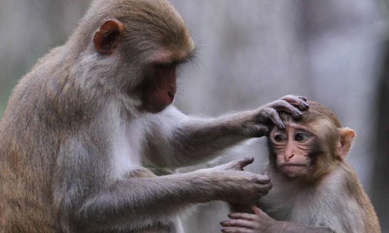

The primate brain is 'pre-adapted' to face potentially any situation
Scientists have shown how the brain anticipates all of the new situations that it may encounter in a lifetime by creating a special kind of neural network that is "pre-adapted" to face any eventuality. This emerges from a new neuroscience study published in PLOS Computational Biology.
Enel et al at the INSERM in France investigate one of the most noteworthy properties of primate behavior, its diversity and adaptability. Human and non-human primates can learn an astonishing variety of novel behaviors that could not have been directly anticipated by evolution—we now understand that this ability to cope with new situations is due to the "pre-adapted" nature of the primate brain.
This study shows that this seemingly miraculous pre-adaptation comes from connections between neurons that form recurrent loops where inputs can rebound and mix in the network, like waves in a pond, thus called "reservoir" computing. This mix of the inputs allows a potentially universal representation of combinations of the inputs that can then be used to learn the right behaviour for a new situation.
The authors demonstrate this by training a reservoir network to perform a novel problem solving task. They then compared the activity of neurons in the model with activity of neurons in the prefrontal cortex of a research primate that was trained to perform the same task. Remarkably, there were striking similarities in the activation of neurons in both the reservoir model and the primate.
This breakthrough shows that we have taken big step towards understanding the local recurrent connectivity in the brain that prepares primates to face unlimited situations. This research shows that by allowing essentially unlimited combinations of internal representations in the network of the brain, one of them is always on hand for the given situation.
Read more at: Phys.Org
More information: Enel P, Procyk E, Quilodran R, Dominey PF (2016) Reservoir
Computing Properties of Neural Dynamics in Prefrontal Cortex.
PLoS Comput Biol 12(6): e1004967. DOI: 10.1371/journal.pcbi.1004967
Journal reference: PLoS Computational Biology
Provided by: Public Library of Science